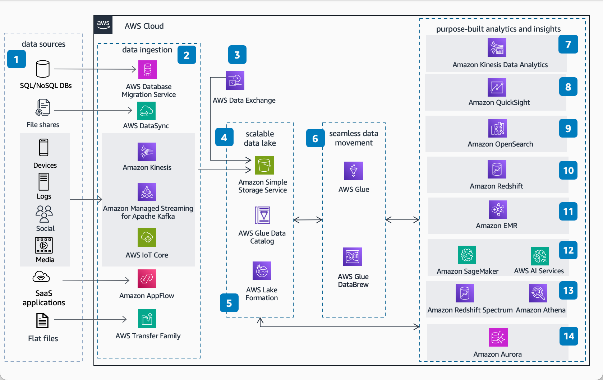

Om gemakkelijk wat blogposts te maken is het fijn om in markdown te kunnen werken. Er zijn diverse tools die dit op telefoon etc aanbieden zonder veel gedoe. Een website direct in html en css bouwen heeft zo haar charme maar wordt op een gegeven moment ook wat irritant als je voornamelijk mobiel (lees kleine schermpjes) werkt.
inline code and code blockspython
def hello_world():
print("Hello from markdown!")
Worden dan ook plaatjes netjes omgezet? Ja, zie hieronder:
Bovenstaande opties maken het allemaal een stuk fijner om even wat in markdown neer te pennen. Bovendien vermijdt je met een simpel build scriptje Jekyll en aanverwanten die in mijn ervaring toch ook weer van erg veel dependencies samenhingen. Of weer teveel configuratie of te weinig html vrijheid om mijn website zo lelijk mogelijk te maken.
Terug naar thuis